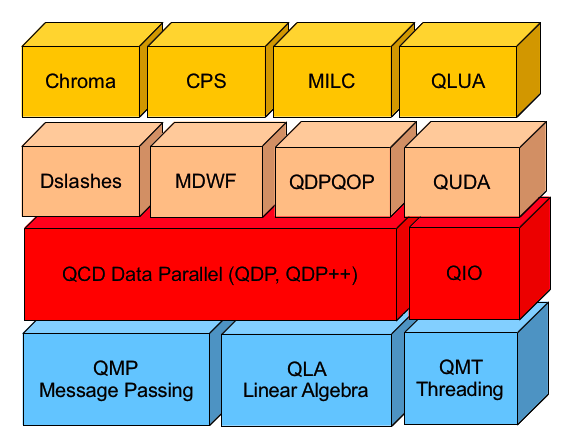

在天河 II 号和 Cori 上安装 Chroma
The Chroma package supports data-parallel programming constructs for lattice field theory and in particular lattice QCD. Here is how I compile chroma on Tianhe II and Cori at NERSC.
目录

准备工作
下载依赖软件包
Chroma 依赖 qmp, qdp++, 如果要支持 GPU, 则需要 qdp-jit:
相应地, qdp++, qdp-jit, chroma 等还依赖其他一些库:
从 github 上 clone 下相应包:
$ mkdir chroma-all && cd chroma-all
$ git clone https://github.com/usqcd-software/qmp
$ git clone https://github.com/usqcd-software/qdpxx
$ git clone https://github.com/fwinter/qdp-jit
$ git clone https://github.com/JeffersonLab/chroma
$ cd qdpxx && git submodule update --init --recursive && cd ..
$ cd qdp-jit && git submodule update --init --recursive && cd ..
$ cd chroma && git submodule update --init --recursive && cd ..
$ cd .. && tar cvjf chroma-all.tar.bz2 chroma-all
打包好源码后, 上传到 天河 II 或 Cori 上.
环境变量设置
### Destination: $HOME/usr
$ export app_root=$HOME/usr
### dependent modules for Tianhe II
###### if using gcc compiler
$ module load gcc/4.9.2
$ module load MPI/mpich/3.2.1-gcc-4.9.2-dynamic
$ export mpi_home=/BIGDATA1/app/MPI/mpich/3.2.1-gcc-4.9.2-dynamic/
$ module load hdf5/1.8.13-gcc-4.8.5-parallel
$ export hdf5_home=/BIGDATA1/app/hdf5/1.8.13-gcc-4.8.5-parallel/
$ module load libxml2/2.9.4-gcc-4.8.5
$ ccc=gcc
$ cpc=g++
$ fort=gfortran
###### if using intel compilers
$ module load intelcompiler/18.0.0
$ module load MPI/mpich/3.2.1-icc-18.0.0-dynamic
$ module load hdf5/1.10.4-icc-14.0.2-parallel
$ ccc=icc
$ cpc=icpc
$ fort=ifort
$ export hdf5_home=/BIGDATA1/app/hdf5/1.10.4/
##-------------------------------------##
### dependent modules for Cori
$ module swap PrgEnv-intel PrgEnv-gnu
$ module unload darshan ##??
$ module load hdf5-parallel/1.10.1
$ export hdf5_home=/usr/common/software/hdf5-parallel/1.10.1/
#########################################
### dependence form IHEP
### PATH
$ export PATH=${app_root}/bin:$PATH
$ ### LD_LIBRARY_PATH
$ export LD_LIBRARY_PATH=${app_root}/lib:$LD_LIBRARY_PATH:$mpi_home/lib:$hdf5_home/lib
如果要支持 GPU:
#### for gcc
$ module load gcc/4.9.2
$ module load MPI/Gnu/MPICH/3.2-gcc4.9.2-dyn
$ export mpi_home=/NSFCGZ/app/MPI/Gnu/MPICH/3.2-gcc4.9.2-dyn/
$ module load hdf5/1.8.17/01-CF-14-par
$ export hdf5_home=/NSFCGZ/app/hdf5/1.8.17/01-CF-14-par/
$ module load CUDA/8.0
$ export cuda_home=/NSFCGZ/app/CUDA/8.0
$ export cuda_libs="-L$cuda_home/lib64 -L$cuda_home/lib64/stubs"
$ ccc=gcc
$ cpc=g++
$ fort=gfortran
### PATH
$ export PATH=${app_root}/bin:$PATH:$cuda_home/bin
$ ### LD_LIBRARY_PATH
$ export LD_LIBRARY_PATH=${app_root}/lib:$LD_LIBRARY_PATH:$mpi_home/lib:$hdf5_home/lib:$cuda_home/lib64:$cuda_home/lib64/stubs
安装 QMP
### cd the source directory
$ cd qmp && autoreconf
### for Tianhe II
$ ./configure --prefix=$app_root --with-qmp-comms-type=MPI --with-qmp-comms-libs='-lmpi -lmpich -lmpichcxx' CFLAGS="-O2 -std=c11 -mavx -msse3" CC=$ccc CXX=$cpc FC=$fort
### for Cori
$ ./configure --prefix=$app_root --with-qmp-comms-type=MPI --with-qmp-comms-libs='-lmpich -lmpichcxx'
### both
$ make -j4 && make check && make install
安装 QDP/C
安装 QDP++
$ cd qdp && autoreconfig
### for Tianhe II
$ ./configure --prefix=${app_root} --with-qmp=${app_root} --enable-parallel-arch=parscalar --with-hdf5=${hdf5_home} CFLAGS="-O2 -std=c11 -mavx -msse3 -fopenmp" CXXFLAGS="-O2 -std=c++11 -mavx -msse3 -fopenmp" --enable-sse3 CC=$ccc CXX=$cpc FC=$fort
### for Cori
$ ./configure --prefix=${app_root} --with-qmp=${app_root} --enable-parallel-arch=parscalar --with-hdf5=${hdf5_home} CXXFLAGS="-O2 --std=c++11" LDFLAGS="-L/opt/cray/pe/mpt/7.6.0/gni/mpich-gnu/5.1/lib" CPPFLAGS="-I/opt/cray/pe/mpt/7.6.0/gni/mpich-gnu/5.1/include"
### both
### there are some errors when running "make check"
$ make -j4 && make install
安装 QDP-JIT
如果要支持 GPU, 需要安装 QDP-JIT:
$ cd qdp-jit && autoreconf -i
$ ./configure --prefix=$app_root --enable-cuda-managed-memory --enable-filedb --enable-openmp --with-qmp=${app_root} --enable-parallel-arch=parscalar CFLAGS="-O2 -std=c11 -mavx -msse3 -fopenmp" CXXFLAGS="-O2 -std=c++11 -mavx -msse3 -fopenmp" CC=mpicc CXX=mpicxx Fort=mpifort CPPFLAGS="-I/usr/include/llvm6.0"
安装 QUDA
$ cd ../quda && aclocal && autoreconf -i
$ mkdir quda_build && cd quda_build
$ CC=$ccc CXX=$cpc cmake ../quda -DQUDA_GPU_ARCH=sm_37 -DCPU_ARCH=x86_64 -DQUDA_MPI=off -DQUDA_INTERFACE_QDPJIT=on -DQUDA_QDPJIT=on -DQUDA_QDPHOME=$app_root -DQUDA_QMP=on -DQUDA_QMPHOME=$app_root -DQUDA_QIO=on -DQUDA_QIOHOME=$app_root -DQUDA_LIMEHOME=$app_root -DMPI_CXX_COMPILER=mpicxx -DMPI_C_COMPILER=mpicc -DQUDA_USE_EIGEN=on -DCMAKE_C_FLAGS_DEVEL="-Wall -O3 -mavx -msse3 -std=c11" -DCMAKE_BUILD_TYPE=DEBUG -DQUDA_POSIX_THREADS=on
$ make -j24 && make install
cd ..
安装 CHROMA
$ cd chroma && autoreconf
############ for Tianhe II
$ ./configure --prefix=${app_root} --with-qmp=${app_root} --with-hdf5=${hdf5_home} CXXFLAGS="-O2 -std=c++11 -mavx -msse3" CFLAGS="-O2 -std=c11 -mavx -msse3" CC=$ccc CXX=$cpc FC=$fort
### if cuda enabled
$ ./configure --prefix=${app_root} --with-qmp=${app_root} --with-qdp=$app_root --with-hdf5=${hdf5_home} CXXFLAGS="-O3 -std=c++11 -mavx -msse3 -fopenmp" CFLAGS="-O3 -std=c11 -mavx -msse3 -fopenmp" CC=$ccc CXX=$cpc FC=$fort --with-qio=$app_root --enable-sse3 LDFLAGS="$cuda_libs" --with-quda=$app_root --enable-jit-clover --enable-quda-deviface # --enable-opt-eigcg #--enable-sse-wilson-dslash --enable-lapack=lapack
############### for Cori
$ ./configure --prefix=${app_root} --with-qmp=${app_root} --with-hdf5=${hdf5_home} CXXFLAGS="-O2 -std=c++11"\
LDFLAGS="-L/opt/cray/pe/mpt/7.6.0/gni/mpich-gnu/5.1/lib" CPPFLAGS="-I/opt/cray/pe/mpt/7.6.0/gni/mpich-gnu/5.1/include"
### both
$ make -j4 && make check && make install